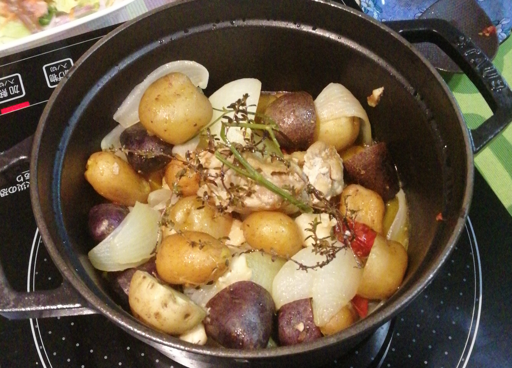

むらさき色のポテト — シャドークイーン
1
今年（2021年）は天候不順のために、北海道などでジャガイモの作柄が良くないようです。
さいわいなことに、わが家の4種のジャガイモ（メークイン、インカノメザメ、キタアカリとシャドークイーン）はほぼ 平年以上 の作柄になりました。
なかでも シャドークイーン は豊作でした。:heart:
シャドークイーンは外形はメークインに似た 長楕円形 ですが、 外皮はほとんど 真っ黒 。 外見からはとてもジャガイモにはみえません(図1) :sweat: 。 果肉は濃い ムラサキ 色です。
図1: シャドークイーンの生いも
シャドークイーンは普段スーパーなどで見かけることはありません。 なじみの無い方も多いかと思います。どんなジャガイモか もう少し詳しく知りたい方はこの記事の巻末＝「参考資料」をごらんください。
さて本題のシャドークイーンの 食べ方ログ です。
2 シャドークイーン食べ方ログ
食味はメークインと男爵の 中間 でしょうか。色はとても個性的なのですが、味は意外に ふつう のジャガイモ味。なので、ネットでは色を活かすような食べ方が推奨されているようです。調理法によってきれいな刺し色になります。
ここでは簡単でおいしく見た目がきれいな 家庭料理 の例を少しずつカタログしていきます。
2.1 (0) キタアカリとシャドークイーンのニョッキ <font size="2" color="green">(2021/10/18 updated)</font>
キタアカリとシャドークイーンの2種類のポテトをニョッキにして色を楽しもうと思いましたが 失敗 。
最初は自家製のトマトソースでやってみました。けどトマトソースの色に埋没してだめ。
図2: トマトソースのニョッキ
次にCostcoジェノベーゼソースでやってみましたが、こちらもシャドークイーンのムラサキがちゃんと発色せず :cry:
{kind=link}
図3: ジェノベーゼのニョッキ
味は両方とも超最高でしたのですが・・・。「色」の世界はむずかしい。
2.2 (1) R さんの シャドークイーンのミルフィーユ <font size="2" color="green">(2021/10/17 updated)</font>
R さんから頂きました。
図4: シャドークイーンのミルフィーユ
R さんのコメント：
マッシュする時間がとれそうになかったのでじゃがいものミルフィーユにしました！
もっと綺麗な層にしたかったのに、一緒に入れたキタアカリに色移りしてぼやけてしまいました:cry:
ほくほくで美味しかったです！
お嬢さまもきっとお気に入られたと思います！今度、孫たちが来たらウチでもやってみます！
2.3 (2) :purpleheart: by Kさんのシェパーズパイ <font size="2" color="green">(2021/10/16 updated)</font>
:purpleheart: by K さんから頂きました。

図5: シャドークイーンのシェパーズパイ
:purpleheart: by K さんのコメント：
ラム挽肉じゃない「なんちゃってシェパーズパイ」です！
もう少しジャガイモが多くてもよかったですが焦げ目もいい感じに美味しく作れました！
綺麗な色に満足です
シャドークイーンのムラサキ色がこの世のものとは思えないです〜。うっとりする美しさ。
2.4 (3) レコさん風 ジャーマンポテト <font size="2" color="green">(2021/10/16 updated)</font>
レコ さんから頂いたシャドークイーンとインカノメザメのジャーマンポテト。
図6: シャドークイーンとインカノメザメのジャーマンポテト
レコ さんのコメント：
揚げただけなのにめーっちゃオシャレ！！
インカのめざめとのコントラストが美しい
ビールが美味しそう！ レコ さんご推奨のビール銘柄は（たぶん）これ1 :wink:
2.5 (4) 南仏風 鶏とニンニクのオリーブオイル煮 <font size="2" color="green">(2021/10/14 updated)</font>
今日はこれですっかり酔っ払いました :sweat:
主役は鶏とニンニクとオリーブオイルですが、脇役として大事なのはジャガイモ。 一口サイズ以下の小さい「 コロコロじゃがいも 」を使います。
この料理では、小さなジャガイモは大きなジャガイモをカットして煮るよりもずぅーっと美味しくなりますよ。

図8: 南仏風鶏とニンニクのオリーブオイル煮
シャドークイーンはムラサキ色が食欲をそそるだけでなく、白いジャガイモ（＝キタアカリやインカノメザメなど）とは 食味 がひと味違います。 んまい です :smile:
基本は白ワインでしょうが、冷やした赤ワインも合います。スキレット鍋の中で赤く見えているのは、自家製の ドライミニトマト です。
2.6 (5) ＿プードルズさんのシャドークイーン ポタージュ <font size="2" color="green">(2021/10/12 updated)</font>
＿プードルズ さんから頂いたシャドークイーンのポタージュです。
図9: シャドークイーンのポタージュ
＿プードルズ さんのコメント：
きれいなうす紫色。パセリがなかったので三つ葉を散らしました。オイシイ。
ポタージュの色も器もなんてゴージャズなんでしょう！
2.7 (6) シャドークイーン入りポタージュ <font size="2" color="green">(2021/10/10 updated)</font>
シャドークイーンのムラサキを差し色で使っただけというシンプルなポタージュです。
図10: キタアカリのポタージュ シャドークイーン入り
今日のイタリアンパセリは 生 です。朝晩冷え込むようになってきて畑のイタリアンパセリが元気を取り戻しています。
2.8 (7) アシ・パルマンティエ <font size="2" color="green">(2021/09/30 updated)</font>
綴りは Hachis Parmentier です。名前はおしゃれですがフランスでは家庭料理。
今回はジャガイモ3種（キタアカリ、シャドークイーン、インカノメザメ）を3層にして、炒めたひき肉（わが家ではポークを使いました）を畑のトマトで作ったソースと合わせたものをサンドイッチにしてオーブンで焼きました。
図11: ジャガイモ3種のアシ・パルマンティエ。スプーンですくって3+1層構造を見てもらおうと思いましたが、きれいに写りませんでした。イタリアンパセリの葉も隅に追いやられているし・・・
目が ぐるぐる するほど美味しかったです。白ワインは必須です:smile: ひき肉を炒める時に油が 透明 になるのを見極めるところがコツだそうです2。
2.9 (8) ジャガイモとピーマンピリの辛炒め <font size="2" color="green">(2021/09/26 updated)</font>
ジャガイモとピーマンを使った 中華炒め 料理の刺し色にシャドークイーン。 白いキタアカリ（ちょっと黄色っぽくなりましたが）とピーマンの 緑 、シャドークイーンの むらさき 。

図12: ジャガイモとピーマンのピリ辛炒め
もう少し緑とムラサキを多めにした方が良かったかも？あと、ウチでは豆板醤でピリ辛にしましたが、辛味にトウガラシを使うと 赤 が加わってさらにきれいになったと思います。
2.10 (9) 4種混合粉ふきいも <font size="2" color="green">(2021/09/17 updated)</font>
自家製ジャガイモ4種（シャドークイーン、インカノメザメ、キタアカリとメークイン）を 粉ふきいも にしました。色合いだけでなく味も微妙な変化があります。ほんわかとした やさしさ を食べる家庭料理です。
図13: 4種混合の粉ふきいも
メークインとキタアカリは両方とも真っ白なので見た目の 色 では区別できませんが、形がしっかりしているのがメークイン、すこし崩れているのがキタアカリです。
2.10.1 (10) ポタージュ
牛乳の量を加減することで むらさき の濃さが変わります。ほんとうにきれいな色がでます。ポタージュの上の葉っぱは自家製の 乾燥イタリアンパセリ (注3)。
図14: シャドークイーンのポタージュ
2.10.2 (11) コロッケ
シャドークイーンはコロッケにすると色がきれいなだけでなく、果肉の持ち味が生きる感じ。 おいしいです。シャドークイーン コロッケは 俵型 に整形、 左の平べったい丸いコロッケは インカノメザメ で、中は明るい黄色 (注4)。
図15: シャドークイーンのコロッケ
ちなみにこれを食べるときには、白ワインを推奨温度よりも冷たくして飲みましょう。むちゃくちゃうまいですよ。
3 To Be Continued
この先、すこしずつ 食べ カタログ を追加します。
本日はこれまでにて・・・。
4 （参考資料）シャドークイーンって？
シャドークイーンの 育種 に関する論文をGoogle Scholarで見つけました（森ほか,2009）。
この論文によれば、シャドークイーンは
1993年 に「北海道農業試験場ばれいしょ育種研究室」（現北海道農業研究センター)で育種が始まり、 2005年 には種商法に基づく品種登録申請がなされ「 ばれいしょ農林57号 」として農林水産省の農作物新品種命名登録されています。2007年からは急速に普及しています。
シャドークイーンの食味や色の特性などについては、次のように書かれています。
「シャドークイーン」は、水煮時の煮崩れが「男爵薯」と同様で中程度、水煮時の食味は「男爵薯」並に優れる。 「インカパープル」や「キタムラサキ」と同様に、水煮や蒸しにより加熱するとアントシアニン系の紫色は退色するが、調理品が熱い状態でも紫の色調は残り、放冷するとさらに色調が戻る。 また、油を用いたフライ料理では紫色が残るが、やや濃すぎる色調となり、褐変は中程度である。
4.1 アントシアニンが豊富
森ら(2009)によれば、
アントシアニン色素成分には、 抗酸化能 などの機能性(五十嵐ほか, 2000)があります。それに加えてジャガイモは一般に 抗インフルエンザ活性 (Hayashi et al., 2003)や
ヒト胃癌細胞のアポトーシス誘導効果 (Hayashi et al., 2006)
などの機能性が確認されています。
シャドークイーンは他の有色ジャガイモに比べて 数倍 のアントシアニンを含有しているそうです（表 1）。
| 品種名 | 平均値 | 標準偏差 |
|---|---|---|
| インカレッド | 1.59a | 0.50 |
| ノーザンルビー | 1.85ab | 0.50 |
| インカパープル | 2.04ab | 0.60 |
| キタムラサキ | 2.54b | 0.74 |
| シャドークイーン | 7.40 c | 2.19 |
表の中の数値は、2001年から2005年までの5年間の測定値の平均と標準偏差です。同じアルファベット同士では平均値の有意差はありません。シャドークイーンは他の有色ジャガイモ4種と比べると ダントツ に多くのアントシアニン色素が含まれています。
5 シャドークイーンの花
6 References
- 森元幸ほか (2009). 有色パレイショ品種「キタムラサキ」,「ノーザンルビー」および「シャドークイーン」の育成 育種研究, 11, 145-153.
- 五十嵐喜治・佐藤充克・寺原典彦・津田考範・津志田藤二郎・梶本修身 (2000)． アントシアニンの生体調節機能 大庭理一郎・五十嵐喜治・津久井亜紀夫(編著) アントシアニン食品の色と健康 第1版 （pp.103－186) 健畠社
- Hayashi, K., Mori, M., Knox-Matutani, Y., Suzutani, T., Ogasawara, M., Yoshida, I., Hosokawa, K., and Tsukui, A. (2003). Food Science and Technology Research, 9, 242-244.
- Hayashi, K., Hibasami,H., Murakami, T., Terahara, N., Mori, M., and Tsukui,A. (2000). Food Science and Technology Research, 12, 22-26.